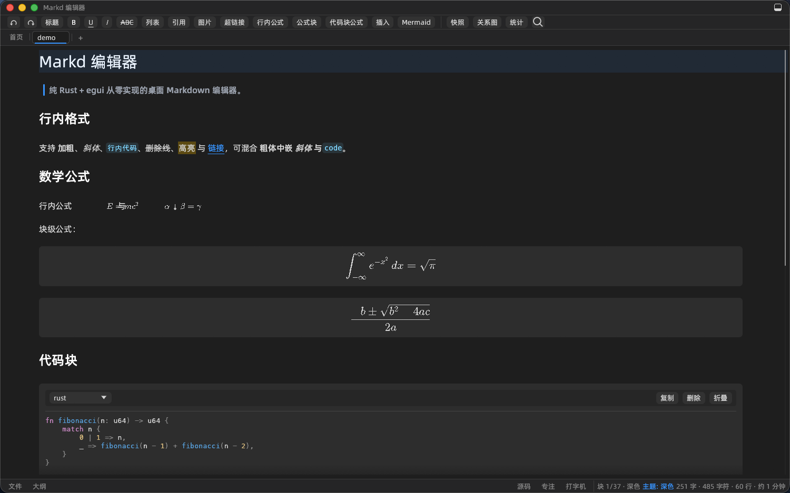

精确到字符Precise to the character
编辑态就是纯文本，星号、缩进、空行一目了然，不会被隐形规则改写。
Editing happens on plain text — asterisks, indentation and blank lines stay visible and never get rewritten by invisible rules.
[ pure rust · egui · zero web kernel ]
Markd 是一个从零实现的桌面 Markdown 编辑器 —— 不套 Web 内核，不用 Tauri / Electron，不依赖任何现成编辑器组件。从 Markdown 解析到屏幕上的每一个三角形，都由它自己完成。
Markd is a desktop Markdown editor implemented from scratch — no web kernel, no Tauri or Electron, no off-the-shelf editor component. From parsing Markdown to emitting every triangle on screen, it does all of the work itself.

自研 AST · 源码无损往返In-house AST · lossless round-trip
公式零栅格化 · 直出 GPUZero-rasterized math · straight to GPU
1000 万字 · 静置帧 1.5 ms10M characters · 1.5 ms idle frame
核心概念Core concept
点任意段落进入编辑态，那一块变成 Markdown 源码让你精确修改字符；焦点移开，立刻回到富文本。既有 Typora 这类所见即所得的直观，又不会被自动格式化「吃掉」源文件里的缩进、空行与原始标记顺序。
Click any paragraph and that block turns into Markdown source so you can edit characters precisely; move focus away and it snaps back to rich text. You keep the immediacy of a WYSIWYG editor without auto-formatting eating the indentation, blank lines, and original marker order in your file.
编辑态就是纯文本，星号、缩进、空行一目了然，不会被隐形规则改写。
Editing happens on plain text — asterisks, indentation and blank lines stay visible and never get rewritten by invisible rules.
自研 AST 直接在 Markdown 与块结构之间往返，不经过 HTML 中间层，格式不会漂移。
The in-house AST round-trips between Markdown and block structure without an HTML middle layer, so formatting never drifts.
从标题拖进段落、跨越代码块与公式，选择框连续；活动块在拖拽期间保持编辑态，布局不跳。
Drag from a heading into a paragraph, across code blocks and formulas — the selection stays continuous, and the active block holds its edit state so nothing jumps.
为什么是 MarkdWhy Markd
| 维度Dimension | Markd | Electron / WebView 编辑器Electron / WebView editors |
|---|---|---|
| 启动体积Binary size | 单文件可执行，安装包 8–19 MBSingle-file executable, 8–19 MB installers | 动辄 100 MB+，捆绑 ChromiumEasily 100 MB+, bundles Chromium |
| 内存占用Memory | 原生 GUI，几十 MBNative GUI, tens of MB | 一个 Chromium 进程起步One Chromium process to start |
| 渲染Rendering | egui 立即模式，GPU 直出egui immediate mode, straight to GPU | DOM + CSS 排版，间接层叠DOM + CSS layout, layered indirection |
| 长文档Long documents | 1000 万字单文件流畅编辑，静置帧 1.5 ms10-million-character files stay smooth — 1.5 ms idle frames | 大文档滚动 / 输入常见卡顿Scrolling and typing stutter on big files |
| 解析Parsing | 自研 AST，源码无损往返In-house AST, lossless round-trip | 经过 HTML 中间层，格式易漂移Round-trips through HTML, format drifts |
功能全景Everything it does
ATX / Setext 标题、嵌套列表、引用嵌套块、GFM 表格与任务列表、围栏代码块、脚注自动编号、上标下标、[TOC]、行内高亮 ==text==、顶部 YAML Front Matter 独立渲染。
ATX / Setext headings, nested lists, nested block quotes, GFM tables and task lists, fenced code, auto-numbered footnotes, super- and subscript, [TOC], inline ==highlight==, and a top YAML front matter rendered apart from the body.
段落 / 格式 / 插入三级子菜单，剪切拷贝粘贴之外还能「复制为」「粘贴为」Markdown、纯文本、HTML 多种目标格式。
Paragraph / Format / Insert submenus, plus Cut-Copy-Paste and "Copy as / Paste as" across Markdown, plain text, and HTML.
Markdown 文件树、标题大纲点击跳转、⌘⇧O 快速打开模糊搜索、[[wiki-link]] 双链关系图、跨文件全文搜索、写作统计、版本快照时间机器、拖拽直接打开。
Markdown file tree, clickable outline, ⌘⇧O fuzzy quick-open, [[wiki-link]] graph, cross-file full-text search, writing stats, version-snapshot time machine, and drag-a-file-to-open.
纯文本源码模式、专注模式 F8 只留亮当前段落、打字机模式 F9 把编辑行锁在视口中央、可配置间隔的自动保存。
Raw source mode, focus mode F8 that dims everything but the current paragraph, typewriter mode F9 that keeps your line centered, and configurable autosave.
截图直接粘贴即落盘并插入链接，图片拖右下角缩放；上传图床支持 Gitee、GitHub 两个代码仓库与六个对象存储平台 —— 阿里云 OSS、七牛 Kodo、火山 TOS、百度 BOS、华为 OBS、腾讯云 COS（单图 20 MB 上限，路径模板支持 {year}/{month}/{day}、{random}、{filename}），远程图片异步下载进纹理缓存，失败显示占位框。代码组是多语言 Tab 的容器，代码块可折叠并按文档绝对路径记住状态；每个文件一个标签，中键关闭，切走再回来光标与选中状态各归各的。
Paste a screenshot and it lands on disk with the link inserted; drag an image's corner to resize it. Uploads target two code hosts — Gitee and GitHub — plus six object-storage platforms: Alibaba OSS, Qiniu Kodo, Volcano TOS, Baidu BOS, Huawei OBS and Tencent COS (20 MB per image, path templates like {year}/{month}/{day}, {random} and {filename}), and remote images download asynchronously into the texture cache with a placeholder on failure. Code groups are multi-language tab containers, code blocks fold and remember their state per file path, and every file gets its own tab — middle-click closes it, and each tab keeps its own cursor and selection.
基于 PTY 的交互式 shell，支持彩色输出与备用屏（vim / less / htop 照常用），面板缩放通过 SIGWINCH 同步行列；可横向或纵向分屏，可开多个终端页签，终端配色还能单独切亮 / 暗。CJK 双宽字符按固定字符网格逐格绘制，中文文件名不会输出成 ?。终端获得焦点时应用快捷键让位。
A PTY-backed interactive shell with color output and the alternate screen (vim / less / htop keep working), resizing synced via SIGWINCH; split the pane horizontally or vertically, open several terminal tabs, and give the terminal its own light or dark palette. CJK double-width characters are drawn cell by cell on a fixed grid, so Chinese file names never come out as ?. App shortcuts yield while the terminal has focus.
公式、代码高亮、Mermaid、表格样式全部内联进一个文件，不引用任何外部资源，浏览器打开即可直接打印成 PDF。
Math, syntax highlighting, Mermaid, and table styling are all inlined into one file with no external references — open it in a browser and print straight to PDF.
自研高亮器覆盖 Rust / Python / JS / C 系 / Markup / CSS / 数据格式 / Shell / SQL 等 10 个语言家族，带行号、当前行高亮、语言标签一键切换与复制。
A hand-written highlighter covering ten language families — Rust, Python, JavaScript, the C family, markup, CSS, data formats, shell, SQL — with line numbers, current-line highlight, a switchable language tag, and one-click copy.
浅色 / 深色两套主题，语法高亮与公式配色随主题联动；macOS 原生菜单栏配自定义标题栏，红绿灯右侧直接排命令面板、快速打开、搜索、保存与终端按钮；侧栏 220+ 个 SVG 图标编译期嵌入二进制，运行时只栅格化一次进纹理缓存。正文默认使用阿里巴巴普惠体 3.0，代码块始终走等宽字体。
Light and dark themes with syntax and formula colors that follow the theme; a native macOS menu bar with a custom title bar where the traffic lights sit beside quick-access buttons for the command palette, quick-open, search, save, and terminal; 220+ sidebar SVG icons embedded at compile time and rasterized once into the texture cache. Body text defaults to Alibaba PuHuiTi 3.0, code blocks always use a monospace face.
渲染管线Rendering pipeline
RaTeX 把 LaTeX 排成显示列表 —— 字形轮廓、贝塞尔路径、线段、矩形；Markd 用 lyon 按 NonZero / EvenOdd 环绕规则细分成三角形，交给 epaint 的 Mesh 直接上 GPU。没有 PNG，没有纹理上传，没有位图缓存。
RaTeX lays LaTeX out into a display list — glyph outlines, Bézier paths, line segments, rectangles. Markd tessellates it with lyon under the NonZero / EvenOdd winding rules into triangles and hands them to epaint's Mesh for direct GPU rendering. No PNG, no texture upload, no bitmap cache.
$…$ · 块级 $$…$$ · 围栏 ```mathInline $…$ · display $$…$$ · fenced ```math不调用 mermaid.js。下面是站点按同一份规范手写的示意，实际渲染与 Markd 一致地为矢量直出。
mermaid.js is never called. The samples below follow the same spec, and real rendering is vector-direct like everything else.
性能Performance
实测口径：10,000,045 字符 / 17.6 MB / 241,046 个块 —— 标题、段落、表格、代码块、公式与 Mermaid 混排。同一份语料、同一台机器（macOS x86_64，release 构建，视口宽 1280）上前后各测一遍。下面这张标尺可以直接拖：把 17.6 MB 的文档滚到任意位置，每帧排版的工作量都不变。
The corpus: 10,000,045 characters — 17.6 MB, 241,046 blocks of mixed headings, paragraphs, tables, code, math and Mermaid — measured before and after on the same file on the same machine (macOS x86_64, release build, 1280-wide viewport). Drag the scale below: scroll that 17.6 MB file anywhere you like, and the work per frame stays the same.
整条是 1000 万字语料的 241,046 个块。拖动滑块在文档里滚动：高亮窗口跟着移动，右侧数字一个都不变 —— 因为一帧只排版视口内的块，外加上下各 24 块余量（MARGIN_BLOCKS）。窗口宽度只是示意，它由视口高度决定，与整条长度无关；切到「优化前」，同一帧要排版整条。The full bar is the 241,046 blocks of the 10M-character corpus. Drag to scroll through it: the highlighted window moves and none of the numbers change, because one frame lays out only the blocks in view plus a 24-block margin above and below (MARGIN_BLOCKS). The window's width is illustrative — the viewport height decides it, never the length of the file. Switch to “before” and the same frame lays out the entire bar.
当前位置：第 43,388 块 · 约 1,800,008 字符At block 43,388 of 241,046 · roughly 1,800,008 characters in
| 场景（1000 万字）Scenario (10M chars) | 优化前Before | 现在Now |
|---|---|---|
| 冷启动首帧First frame on open | 13,862.9 ms | 34.8 ms |
| 静置一帧Idle frame | 5,703.8 ms（最差 9,042.6） | 1.5 ms（最差 4.0） |
| 滚动一帧Scroll frame | 3,864.4 ms（最差 8,446.7） | 5.5 ms（最差 9.0） |
| 敲字一帧Typing frame | 3,471.1 ms（最差 3,583.0） | 2.7 ms（最差 8.3） |
| 每帧绘制图元Shapes per frame | 754,878 | 182 |
| 常驻内存Resident memory | 3,152 MB | 271 MB |
| 打开流水线Open pipeline | 读盘 44 + 解析 1,246 + 大纲 9.2 + 统计 290 ms | 读盘 44 + 解析 553 + 大纲 4.2 + 统计 0.5 ms |
每块的高度与顶边前缀和存在排版表里，二分定位落在视口内的块，一帧只排版它们，外加上下各 24 块余量吸收滚轮惯性。高度用实测值自我收敛：没测过的块先用兜底值占位，一被排版就换成真实值，高度变化超过 0.5 px 才标脏重算前缀和 —— 早期「只有估算高度 + 占位」的虚拟滚动会让滚动条反复回弹，那套做法已被推翻。
Block heights and their top-edge prefix sums live in a layout table; a binary search finds the blocks inside the viewport, the frame lays out only those, plus a 24-block margin above and below to absorb wheel inertia. Heights converge on measurement: an unmeasured block starts on a fallback and is replaced by its real height as soon as it is laid out, and the prefix sums are only recomputed when a height moves by more than 0.5 px. The earlier virtual scroller — estimated heights, placeholders, never measured — made the scrollbar rebound and has been retired.
打开时全文解析一次：1000 万字 553 ms，约 1,800 万字符 / 秒。之后每次按键只重新解析当前编辑的那一块 —— 10 万字文档里单块写回从 26 ms 降到约 5 µs。只有粘贴空行这类把一块拆成多块的情况才回退一次全文解析。行内标记解析再按块分片并行。
One full parse on open: 553 ms for 10M characters, roughly 18 million characters per second. Every keystroke afterwards reparses only the block being edited — on a 100k-character file that write-back dropped from 26 ms to about 5 µs. Only edits that split one block into several, such as a pasted blank line, fall back to a full parse. Inline markup is parsed in block-sharded parallel.
编辑记录以「块序号 + 旧文本 + 新文本」的拼接段入栈，只有整篇替换才退化成全量快照：1000 万字 200 条记录的栈占用从 3,300 MB 降到 0.09 MB，全量撤销 / 重做从 1,483 / 1,497 ms 降到 0 ms 量级。1M 字连做 200 条记录，常驻内存从「29 → 388 MB 线性上涨」压平成 26 MB 不再增长，撤销后无损还原。快照仍按 450 ms 节流、上限 200 组。
Each edit goes on the stack as a splice of «block index, old text, new text», degrading to a full snapshot only when the whole document really is replaced: 200 records on a 10M-character file fell from 3,300 MB to 0.09 MB, and a full undo / redo from 1,483 / 1,497 ms to the 0 ms range. Doing 200 records on a 1M-character file flattens resident memory from a linear 29 → 388 MB climb to a flat 26 MB, and the restore is lossless. The 450 ms throttle and 200-record cap are unchanged.
字数、段落、阅读时长由每块的统计量求和，改一块只重算一块：1000 万字 290 ms → 0.5 ms，并配了一条与全量扫描逐字段对照的等价性测试 —— 增量路径和全量路径必须给出同一个数。
Character, paragraph and reading-time counts are sums of per-block statistics, so editing one block recomputes one block: 290 ms → 0.5 ms on 10M characters, guarded by an equivalence test that runs the incremental path against a full scan and compares every field.
命中扫描按块分片，线程数取 min(可用核数, 8)：1000 万字全文扫描 93.9 → 20.9 ms，1M 字 9.9 → 2.6 ms。结果与串行逐字节一致，包括命中上限。
The match scan is sharded by block across min(cores, 8) threads: a full scan of 10M characters goes 93.9 → 20.9 ms, and 9.9 → 2.6 ms at 1M. Results are byte-identical to the serial path, hit cap included.
语法高亮只作用在可见块上，代码块暖帧 63.0 → 1.4 ms（10 万字语料）。源码模式按文档修订号缓存整篇源码串、行首表、字符数与最长行宽度，只在文档真改过之后重算，行号也只画视口内那几十行：1000 万字源码模式一帧 113 → 15.7 ms。
Syntax highlighting runs on visible blocks only, taking a code block's warm frame from 63.0 to 1.4 ms on the 100k corpus. Source mode caches the whole-document string, line-start table, character count and longest-line width behind the document's revision number and rebuilds them only when the text actually changed, and line numbers are drawn only for the lines in view: a source-mode frame at 10M characters went 113 → 15.7 ms.
双链目标索引改成虚拟列表，1000 万字文档侧栏重建一帧从 307 ms / 254 MB 降到 0.25 ms / 0.2 MB。
The backlink target index became a virtual list, dropping a sidebar frame at 10M characters from 307 ms / 254 MB to 0.25 ms / 0.2 MB.
所有文本块按显式宽度预排版成 galley 再交给 Label，避免横向布局里退化成无限宽而每帧重排；侧栏图标编译期嵌入、只栅格化一次进纹理缓存；公式走 RaTeX 显示列表零栅格化。这三条本轮没动，也不需要动。
Every text block is pre-laid into a galley at an explicit width before becoming a Label, so it never degrades to infinite width and re-lays each frame; sidebar icons are embedded at compile time and rasterized once into a texture cache; math goes through RaTeX display lists with zero rasterization. None of the three needed touching this round.
文件树扫描有 4000 文件 / 6 万条目上限兜底；快速打开与双链关系图只在面板打开时才后台扫描，启动阶段绝不同步扫盘。[profile.dev.package."*"] opt-level = 3 只对依赖全量优化，cargo run 直接可日用，自己的代码仍可断点调试。
Tree scanning is capped at 4,000 files and 60,000 entries; quick-open and the link graph only scan in the background once their panel opens, never synchronously at launch. [profile.dev.package."*"] opt-level = 3 optimizes just the dependencies, so cargo run is usable daily while your own code stays breakpoint-debuggable.
只在千万字量级才有感知的三项：源码模式冷首帧 6.6 s（egui 对整篇 17.6 MB 文本一次性排版，此后每帧 15.7 ms）、源码模式敲字约 950 ms/键（整篇重新解析）、HTML 导出 1.9 s。默认的混合模式不受这三项影响。
Three costs you only feel at the 10M scale: a 6.6 s cold first frame in source mode (egui lays all 17.6 MB out at once, then 15.7 ms per frame), roughly 950 ms per keystroke in source mode (the whole file reparses), and a 1.9 s HTML export. The default Hybrid View is untouched by all three.
1M 字 / 24,420 块，同一套探针：打开流水线读盘 4.4 + 解析 49.9 + 大纲 0.8 + 统计 0.1 ms；静置一帧 1.2 ms（最差 3.2）、滚动 4.0 ms、敲字 2.5 ms；常驻内存 137 MB；HTML 导出 189.9 ms；全文搜索并行 2.6 / 串行 9.9 ms。
1M characters across 24,420 blocks, same probes: the open pipeline is 4.4 disk + 49.9 parse + 0.8 outline + 0.1 stats ms; an idle frame is 1.2 ms (3.2 worst), scroll 4.0, typing 2.5; 137 MB resident; HTML export 189.9 ms; full-text search 2.6 ms parallel against 9.9 serial.
压测探针要显式打开，日常 cargo test 不会跑它：
The stress probes are opt-in; a normal cargo test never runs them:
MARKD_STRESS=1 MARKD_STRESS_TARGET=10000000 \
cargo test --release -p markd-ui stress -- --nocapture --test-threads=1项目结构Project structure
应用状态与动作分发、Hybrid View 编辑器与选择 / 光标 / 撤销、块排版表与视口裁剪（editor/layout.rs）、块级渲染、PTY 终端、文件树与大纲与搜索、220+ 编译期 SVG 图标。
App state and action dispatch, the Hybrid View editor with selection, cursor and undo, the block layout table with viewport culling (editor/layout.rs), block rendering, the PTY terminal, the file tree / outline / search sidebar, and 220+ compile-time SVG icons.
macOS 原生菜单栏与系统字体加载，平台差异只在这里收口。
The native macOS menu bar and system font loading — platform differences stop here.
自研 Markdown AST、文档模型与差量撤销栈（按「块序号 + 旧文本 + 新文本」入栈）、Command 抽象、HTML 导出、工作区扫描与双链索引、图床上传、主题与语法高亮配色。
The in-house Markdown AST, document model and delta undo stack (records of «block index, old text, new text»), the Command abstraction, HTML export, workspace scanning and link indexing, image-host uploads, and theme and syntax colors.
全部落在用户目录 ~/.markd/：config.json 存主题、字体、字号、自动保存与图床令牌，folds.json 记代码块折叠状态，fonts/ 优先加载 Regular 字重，snapshots/ 是版本快照 —— 不写入项目目录。
Everything lives under ~/.markd/: config.json for theme, fonts, size, autosave and image-host token, folds.json for code-block folding, fonts/ preferring the Regular weight, and snapshots/ for version history — nothing is written into your project folder.
GitHub Actions 在 macOS / Windows / Linux 上编译测试，产物上传为 Artifacts；推送标签时自动创建 Release：macOS 三种 DMG，Linux 的 .deb / .rpm / .tar.gz，Windows 的 NSIS 安装程序。
GitHub Actions builds and tests on macOS, Windows, and Linux, uploading artifacts per run; pushing a tag cuts a Release automatically — three DMGs for macOS, .deb / .rpm / .tar.gz for Linux, and an NSIS installer for Windows.
键盘优先Keyboard first
终端获得焦点时，除 ⌘/Ctrl J 外的应用快捷键都会让位给 shell，避免打断交互式命令。
While the terminal has focus, every app shortcut except ⌘/Ctrl J yields to the shell so interactive commands are never interrupted.
开始使用Get started
Markd-*-macos-apple-silicon.dmgApple Silicon（M 系列）Apple Silicon (M-series)Markd-*-macos-intel.dmgIntel 芯片Intel chipsMarkd-*-macos-universal.dmg通用二进制，两种芯片都能跑Universal binary, runs on bothMarkd-*-macos.zip不想装进 Applications 的压缩包Archive, if you would rather not install it打开后把 Markd 拖进 Applications 即可。首次运行若提示「无法验证开发者」，执行：
Open the DMG and drag Markd into Applications. If the first launch warns about an unverified developer, run:
xattr -d com.apple.quarantine /Applications/Markd.appMarkd-*-windows-setup.exeNSIS 安装程序NSIS installer安装向导里可选目录，会自动创建开始菜单与桌面快捷方式。
Choose an install directory in the wizard; start-menu and desktop shortcuts are created automatically.
Markd-*-linux-amd64.debDebian / UbuntuDebian / UbuntuMarkd-*-linux-amd64.rpmFedora / openSUSEFedora / openSUSEMarkd-*-linux-amd64.tar.gz直接跑二进制Run the binary directlysudo dpkg -i Markd-*.deb # or: sudo rpm -i Markd-*.rpm两种包都会注册应用菜单项。运行依赖：
Both packages register a menu entry. Runtime dependencies:
sudo apt-get install -y libxkbcommon-dev libxcb-render0-dev libxcb-shape0-dev \
libxcb-xfixes0-dev libxrandr-dev libxi-dev libgl1-mesa-dev libegl1-mesa-dev \
libwayland-dev libgtk-3-dev需要 Rust 1.85+（workspace 使用 edition = "2024"）。依赖已经过全量优化，开发构建直接可日用。
Requires Rust 1.85 or newer (the workspace uses edition = "2024"). Dependencies are fully optimized, so the dev build is usable every day.
cargo run -p markd
cargo run -p markd -- path/to/note.md
cargo build --release -p markd本页写作时最新 tag 2026.11.21.1 · 最新版本以 Releases 页为准Written against tag 2026.11.21.1 · check Releases for the newest build
基于 PolyForm Noncommercial 1.0.0 发布：任何非商业用途（个人学习、研究、爱好项目、公益 / 教育 / 政府机构）均可自由使用、修改与分发；商业用途需另行获得作者授权。
Released under PolyForm Noncommercial 1.0.0: free to use, modify, and redistribute for any noncommercial purpose — personal study, research, hobby projects, public-interest, education, and government use. Commercial use requires separate permission from the author.